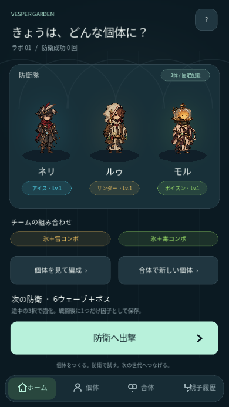
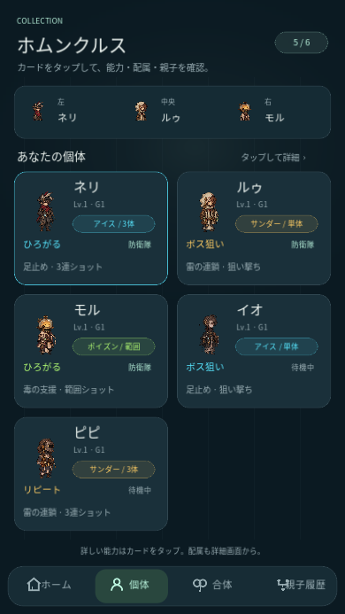
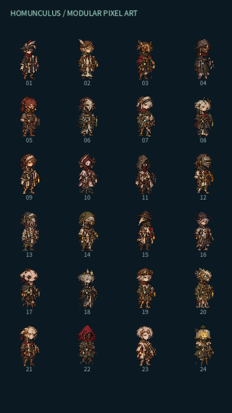
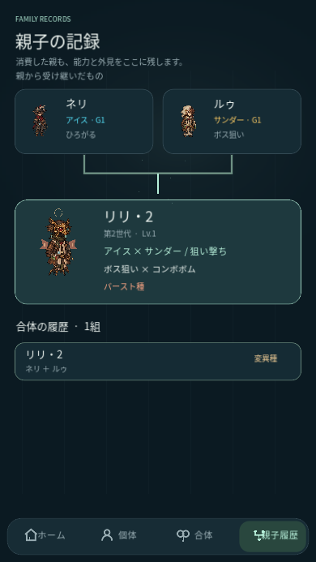
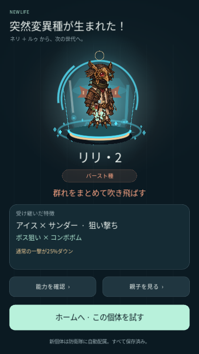
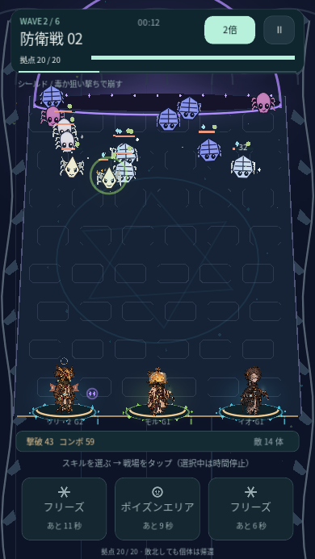

GODOT 4 · ANDROID PROTOTYPE 0.7.3
VESPER GARDEN
親の姿を、次の個体へ。
王道・奇抜・陰鬱・スチームパンク・クトゥルフ・近未来の144パーツをゲームへ組み込み、基本素材と合わせて160パーツに。頭・衣装・脚・小物を組み替え、合体で親の外見を受け継ぎます。能力・成長・変異確率・戦闘ルールは前版のままです。
Android APKをダウンロード0.7.3 · 68.1 MB · Android 7以降ARM64・ARMv7 / OpenGL ES 3.0。前版へ上書きし、セーブを引き継げます。
スマホに入れる
- ChromeなどでAPKを保存。
- 通知またはファイルアプリで開き、求められた場合、そのアプリに「不明なアプリのインストール」を許可。
- Vesper Gardenを起動。引き継ぐ場合はアンインストールせず上書き更新します。
今回の組み込み
- 新規追加：スチームパンクの機構、クトゥルフの深海生物、近未来の補修装備。王道・奇抜・陰鬱と部位ごとに組み合わせます。
- 個体ごとの部位を保存。合体で頭・衣装・脚・小物を継承し、変異では姿も変化します。
- 既存の個体・消費した親にも再現可能な外見を割り当て。再起動で再抽選しません。
- 初期部隊と控え、新たな補充、次の合体で新しい姿を確認できます。












操作
個体カード→詳細で配属→ホームから出撃。通常攻撃は自動。スキルを選び、時間停止中に戦場をタップ。右上で1倍／2倍。成長・因子抽出→親2体の合体→子と親の能力・外見を確認→再出撃。
確認範囲
884項目を検証。旧版100種子の能力・成長・変異・乱数状態と一致、全144パーツの入手・保存・旧セーブ互換、実タッチの全防衛→合体→全防衛を確認。APKの署名・更新互換・配布バイトを照合。Android実機の起動・性能は未確認です。